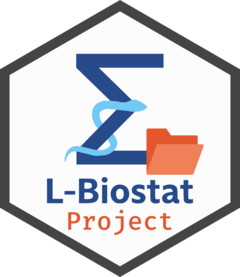

Save outputs in the project
save_outputs.RdThese functions standardize how outputs are saved in an
lbstproj project:
save_data()saves a data frame asrdstodata/processed.save_table()saves a table asrdstodata/tablesand optionally export it asdocxtoresults/tables.save_figure()saves a figure aspng(or another extension) toresults/figures.
To save another R object (e.g. a model, a mice object, ...) to file, you need to
use base::saveRDS and manually define the file path.
Each function saves the object using the given name, after validating it. Names can only contain letters, numbers, and hyphens.
Usage
save_data(
data,
name,
overwrite = TRUE,
quiet = getOption("lbstproj.quiet", FALSE)
)
save_table(
table,
name,
export = TRUE,
overwrite = TRUE,
quiet = getOption("lbstproj.quiet", FALSE),
...
)
save_figure(
figure,
name,
extension = "png",
width = 6,
height = 4,
overwrite = TRUE,
quiet = getOption("lbstproj.quiet", FALSE),
...
)Arguments
- data
A
data.frameto save.- name
Character. File name without extension.
- overwrite
Logical. If
TRUE, overwrite an existing file with the same name. IfFALSE, an error is thrown when the target file already exists.Default:
TRUE. Outputs are overwritten by default.- quiet
Logical. If
TRUE, suppress informational messages.Default:
FALSEunless the global optionlbstproj.quietis set otherwise. The default option can be changed usingoptions(lbstproj.quiet = TRUE)- table
A
gt_tblobject to save.- export
Logical. If
TRUE, also export the table as a.docxfile.Default:
TRUE. Word tables are always produced unless specified otherwise.- ...
Additional arguments passed to the saving function:
For
save_table(): passed to gt::gtsaveFor
save_figure(): passed to ggplot2::ggsave
- figure
A
ggplotobject to save.- extension
Character. Output format for figures:
"png"or"pdf".Default:
"png"- width, height
Numeric. Width and height of the saved figure in inches.
Default: A width of 6 and a height of 4. This fits nicely on a portrait A4 page.
Examples
if(FALSE) {
save_data(mtcars, name = "analysis_dataset")
summary_table <- gt::gt(head(mtcars))
save_table(summary_table, name = "baseline_characteristics")
scatter_plot <- ggplot2::ggplot(
mtcars,
ggplot2::aes(wt, mpg)
) +
ggplot2::geom_point()
save_figure(scatter_plot, name = "mpg_vs_weight")
}